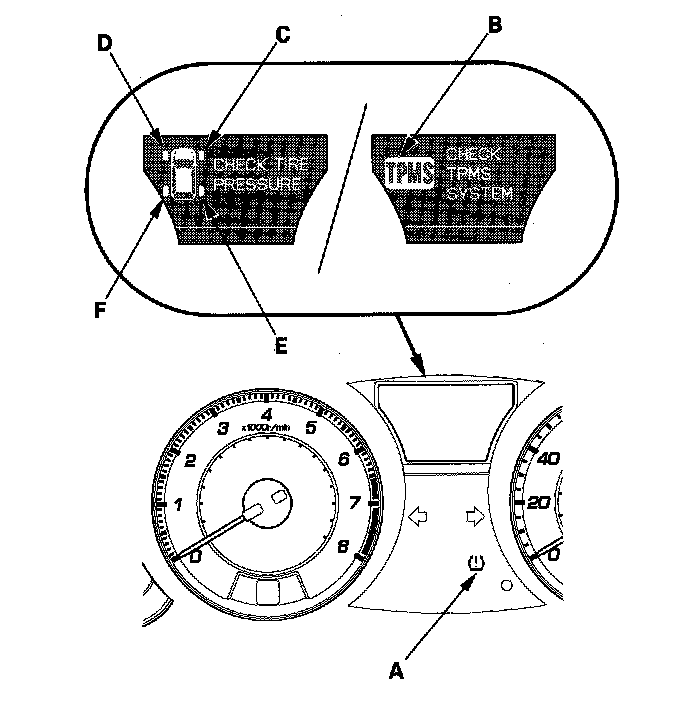

Low Tire Pressure Indicator: Locations
System Indicator LocationThe system has six indicators.
- The low pressure indicator (A)
- The TPMS indicator (B)
- The right-front (RF) tire indicator (C)
- The left-front (LF) tire indicator (D)
- The right-rear (RR) tire indicator (E)
- The left-rear (LR) tire indicator (F)
